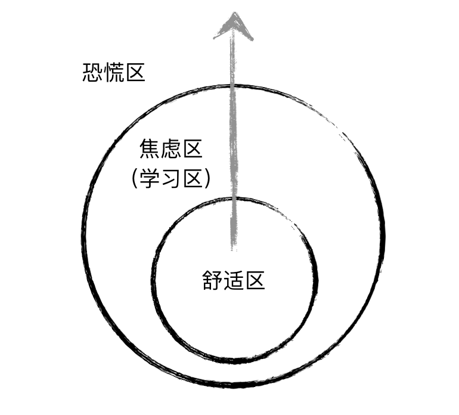

前端程序员的自我成长
关于学习技术
开发与学习过程中，会接触与使用到各种技术。它们在预期使用寿命、紧迫性等方面存在诸多差异。
预期寿命
先说一下所谓的预期使用寿命。这也与2015年底讨论的比较热的话题有点关系。
摩尔定律指出计算机性能大概每18个月会提高一倍。除了硬件，摩尔定律似乎也眷顾了软件开发领域：
每过 18 个月，就有一半的知识会过时。
有些工具、类库、方言从诞生到流行到凋亡，只有很短的时间。例如打包工具 Grunt，流行了一年后，社区基本上就转到 Gulp 麾下；而 Gulp 流行了一年多后，Webpack 又迅速壮大。Coffeescript 在一些开发者中也非常流行，它提供了非常简洁的编程语法，然后将其编译为（Coffeescript 程序员们认为笨拙的）原生 JavaScript。不过，随着 ECMAScript 2015 标准的正式发布，Coffeescript 其实算是完成了它的历史使命，即以社区力量推动标准化进程。
这一类技术，就是预期使用寿命比较短的技术——它们因标准或生产工具的不完善而生，最终要么因标准化而消亡，要么因为更优秀的替代者的出现而逐渐无人问津。
因此，在选择一个技术的时候，就要考虑它的预期使用寿命了：是否过一段时间，就要抛弃它，转向它的替代品？不可否认程序员是需要不断学习的一群孩子。可是如果经常要学习各种寿命短的相似工具，这个成本还是比较大的。
预期使用寿命长的，无非就是那些大家称为“基础”的技能点：例如 Git，JavaScript。Git 自 2005 年诞生至今 11 年，JavaScript 从 1996 年诞生至今已有 20 年，相信它们都会被社区长久地维护下去。那么这些就是应该作为基本功，认真去学的，最好是达到手到擒来的境界。
对前端程序员来说，在个人的自由时间里，应该优先选择学习这样的技术：
- 所有程序员应当具备的计算机科学核心知识，例如数学、算法、数据结构、系统设计等
- 已正式标准化或者即将标准化的，例如 ECMAScript 5/6/7，HTML5，CSS3
- 社区或者基金会长期维护的，例如 Git, Node.js, Linux
- 大公司长期维护的，例如 React（背后有 Facebook ），AngularJS（背后有 Google 支撑）
紧迫性（或优先级）
这个是跟业务开发相关的。项目中用到的那些技术，如果没有掌握，会成为影响开发进度、开发效率的因素，那就是应该具有较高的学习优先级。好比我刚来的时候，懂点JS，懂点Git操作，会点Mac操作，但就是没有接触过 React，而项目乃至整个团队都是完全基于 React 进行开发的，那么 React 自然具有最高优先级。
没有需求，也许就没有了程序员的价值。
如何提升
不断修正自己的认知
人不能两次踏进同一条河流
—— 古希腊哲学家赫拉克利特（约公元前 530 年 ~ 前 470 年）
程序员的编程行为是严谨、严肃的，容不得马马虎虎与模棱两可。自己的错误认知可能会给系统带来潜在的问题，甚至造成致命的打击。如果你的同事指出了他认为你理解有误的地方，那么应该去做调研、验证，而非停下来，展开一场基于已有认知的辩论。
不必因为自己过去理解错了而自惭形秽。最重要的是要敢于接受正确的理解，承认那时的自己是错误的。倘若心里有点不好受，可以这样安慰自己：那时的我不是现在的我，就如同那时的河流并非此时的河流，毕竟：“万物皆流，无物常住”。
时不时跳出舒适区
人的认知领域可以划分为这三个区域：舒适区（comfort zone），学习区（或焦虑区，learning zone），以及恐慌区（panic zone，也叫做危险区）。如下图所示。

人人都喜欢舒适区，这里阳光明媚，温度适宜，空气清新，工作起来非常高效率，甚至都不怎么用脑子。在这里面的知识都是这个人掌握、运用得非常好的。就像一个学了一两年前端开发的同学A，对 JavaScript 的各种特性肯定是如数家珍。舒适区听上去很不错。但是停留在这里太久，水平原地踏步，绝对不是件好事。
最外面的是新领域，叫做“恐慌区”，这里的知识对这个人来说都是陌生的，完全没有掌握甚至没有接触的。就像那个同学A（假定TA就像我一样，是自学编程，因此只会前端开发），如果让他去用 Java 写后台，那很可能会很痛苦、无从下手。
稍微往舒适区外走几步，你会感觉到这里有些让人焦虑：有些技术，你听说过名字，但其实还没有完全理解它的工作原理，或者用得不熟练，然而项目中马上就要用到了。你感觉到一丝冷风吹过，天空好像没有那么明媚了。不过，好在你稍微了解过大概，可以花一两天的时间达到熟练的程度，看起来，可以应付得来。那么这个区域就是你的学习区，在这里，适当的未知引发你的焦虑，会刺激你学习新东西。征服了这个区域，阳光会很快明媚起来。好比如果这个同学懂 JavaScript，又要学后端开发，那么直接上手 Node.js，可能比先学 Java，然后开始做后端开发要稍微少点门槛（之所以说“稍微少点”，是因为后端开发并不只是编程语言层面上的东西，编程语言只是服务器端开发的一个子集，理论上任何一门编程语言都可以实现一整套的服务器端逻辑，这个时候变的是语言，不变的是诸如HTTP、TCP、并发处理、页面渲染、文件分发、认证授权、会话管理、路由设计、并发处理等等）。
很多新技术、新工具，通常都会提供一个“学习区”，叫做“Get started”，或者“快速入门”，或者“Hello world”。通过看这些东西，就可以知道这个是不是处在自己的学习区内。
想要成为一个更厉害的编程高手，就要时不时跳出自己的舒适区，不断地去学习新东西。
打开黑盒子
随着软件复杂度的提升，现代的开发者极少能够打开所有的黑盒以了解其中的运行机理。能够越多地打开黑盒一窥究竟，程序员的技术磨炼得也就越厉害。
所以，不要放过技术细节。揪住一个点，挖下去，很可能多挖几层就碰到问题的根源了。多去问一下“为什么”、“是什么”，以及在看到一些框架、功能时，思考“怎么实现”。
读书
编程本身是严肃的工程行为，优秀的程序员应当具备相关开发领域足够多的知识。读书是建立系统的认知和理论体系的正统之道。选择书目的时候，不一定只关注纯技术类的话题，最好还要广泛涉猎计算机文化、艺术、人物、历史、未来等等方面。例如读《黑客与画家》以了解黑客文化；读《UNIX编程艺术》以领略 Unix 文化的魅力；读《代码的未来》可以让你了解今后编程语言可能的发展趋势；读《编程人生》（Coders at Work）则可以使你了解那些世界顶级的程序员们的成长经历、人生观念。
Stackoverflow 网站上有个著名的问题，“程序员最应该读的书有哪些？”[1]。投票数最多的回答给出了一个长长的书单，前十名是：
- Code Complete (2nd edition) by Steve McConnell. 《代码大全》
- The Pragmatic Programmer. 《程序员修炼之道：从小工到专家》
- Structure and Interpretation of Computer Programs. 《计算机程序的构造和解释》
- The C Programming Language by Kernighan and Ritchie. 《C程序设计语言》
- Introduction to Algorithms by Cormen, Leiserson, Rivest & Stein. 《算法导论（原书第2版）》
- Design Patterns by the Gang of Four. 《设计模式》
- Refactoring: Improving the Design of Existing Code. 《重构》
- The Mythical Man Month. 《人月神话》
- The Art of Computer Programming by Donald Knuth. 《计算机程序设计艺术》
- Compilers: Principles, Techniques and Tools by Alfred V. Aho, Ravi Sethi and Jeffrey D. Ullman. 《编译原理》（龙书）
这份书单对所有程序员都有参考意义。而在前端领域，个人推荐下列几本必读书目。
- 《JavaScript高级程序设计（第三版）》
- 《JavaScript权威指南》
- 《JavaScript语言精粹》
- 《高性能网站建设指南》
- 《高性能网站建设进阶指南》
- 《CSS权威指南》
- 《HTTP权威指南》
- 《深入理解ES6》
- 《JavaScript忍者秘籍》
- 《你不知道的JavaScript》系列